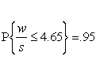
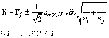
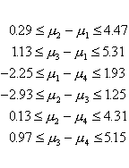

|
7.
Product and Process Comparisons
7.4. Comparisons based on data from more than two processes 7.4.6. How can we make multiple comparisons?
|
|||
| Tukey's
method considers all possible pairwise differences of means at the same
time
The studentized range q
The distribution of q is tabulated in many textbooks and can be calculated
using Dataplot
|
The Tukey method applies simultaneously
to the set of all pairwise comparisons
{mi - mj} The confidence coefficient for the set, when all sample sizes are equal, is exactly 1-a. For unequal sample sizes, the confidence coefficient is greater than 1-a. In other words, the Tukey method is conservative when there are unequal sample sizes. Studentized Range Distribution The Tukey method uses the studentized range distribution.
qr, n = w/s The distribution of q has been tabulated and appears in many textbooks on statistics. In addition, Dataplot has a CDF function (SRACDF) and a percentile function (SRAPPF) for q. As an example, let r = 5 and n = 10. The 95th percentile is q.05;5,10 = 4.65. This means:  Tukey's Method The Tukey confidence limits for all pairwise comparisons with confidence coefficient of at least 1-a are:  Notice that the point estimator and the estimated variance are the same
as those for a single pairwise comparison that
was illustrated previously. The only difference between the confidence
limits for simultaneous comparisons and those for a single comparison is
the multiple of the estimated standard deviation.
Example We use the data from a previous example. The set of all pairwise comparisons consists of: µ2-µ1, µ3-µ1, µ1-µ4, µ2-µ3, µ2-µ4, µ3-µ4 Assume we want a confidence coefficient of 95 percent, or .95. Since r = 4 and nt = 20, the required percentile of the studentized range distribution is q.05; 4,16. Using the Tukey method formula for each of the six comparisons yields:  The simultaneous pairwise comparisons indicate that the differences µ1 -µ4 and µ2 - µ3 are not significant different from 0 (their confidence intervals include 0), and all the other pairs are significantly different from one another. It is possible to work with unequal sample sizes. In this case, one has to calculate the estimated standard deviation for each pairwise comparison. The Tukey procedure for unequal sample sizes is sometimes referred to as the Tukey-Kramer Method.
|
||